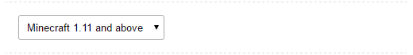
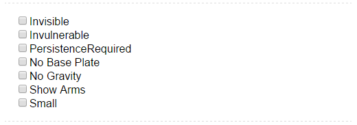
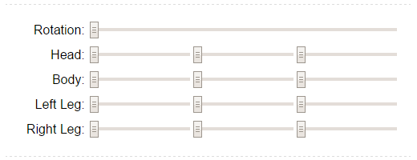
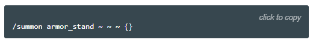

The armorstand helper allows you to focus on designing an armorstand’s pose, without messing with any code.
This tool was originally written for Minecraft 1.8, but has been updated since then to support all different versions of Minecraft.
Help
Navigation
The panel on the left shows a preview of what your armorstand will look like, once it’s in game. You can drag this view around, to look at the armorstand from different angles.
Version

There are small differences between the different versions of Minecraft, so please select the version you’re playing in here. Minecraft will display the current version in the launcher and in the bottom left corner of the menu screen. If you have no idea what to select, the default option is probably fine.
Options

These checkboxes control various aspects of your armorstand.
- Invisible turns your armorstand invisible.
- Invulnerable makes it indestructible. You can remove all armorstands within a five block radius around you with this command: /kill @e[r=5,type=armor_stand]
- PersistenceRequired is a technical attribute. If you don’t know what it means, you don’t need this.
- No Base Plate hides the stone plate the armorstand is standing on.
- No Gravity makes the armorstand float in the air.
- Show Arms enables the arms and allows you to modify them.
- Small makes the armorstand small.
Pose

These sliders control the pose of the armorstand. Play around with them and see what happens!
Equipment

Use these fields to give the armorstand some equipment. The inputs for boots, leggings, chestplate and helmet have dropdowns to help you select an item. If you want to show a different item, you need to find its name by hovering over an item in Minecraft with the advanced information enabled. You can enable the advanced display within Minecraft by pressing F3+H.
Give Code is a special mode. If you click on the banner to minecraft-heads.com, you can select any head you like to place on your armorstand. If you want to place kirby’s head on your armorstand, click copy right to the code labeled Give-Code and paste that into the helmet field in the armorstand generator.
Custom Name

You can give the armorstand a custom name. Check the box to make the name appear over the armorstand.
Slot Interaction

This is a slightly more advanced feature. You can lock certain types of interactions with the armorstand here. For example: If you check the box remove helmet a player can place a helmet on the armorstand, he can replace the helmet with another one, but he will not be able to remove it.
Generated Code

Once you are finished setting everything up, press the button click to copy to copy the code. Jump into a Minecraft world and press T to open the chat, and then press CTRL+V to paste the command. When you press ENTER the armorstand will appear where you are standing.